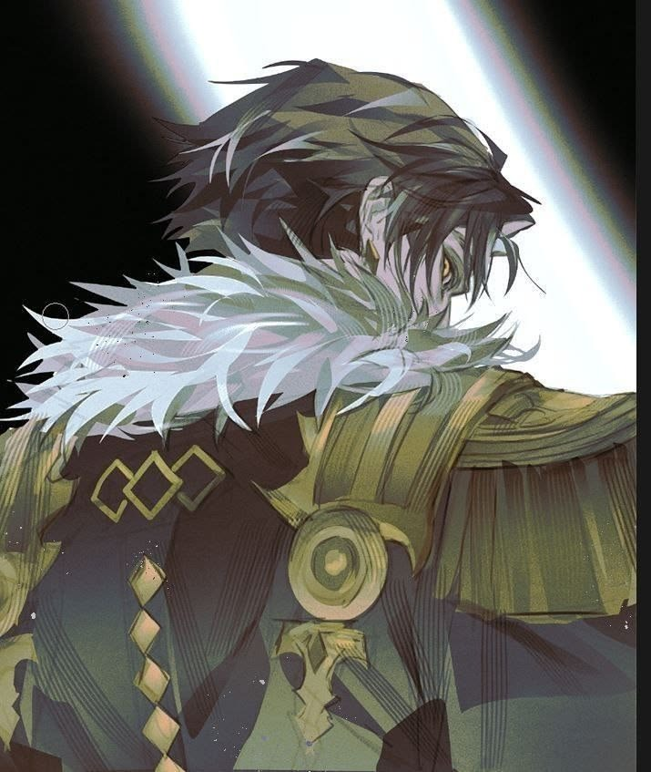

| Cozbi Mahuo | Head of House Mahuo Master of the Sum-gol Post First Keeper of the Order of the Spiritual Reality as of the season after the war |
| Epithet | The God of Summons. The south says it flat, the Accord writes it in a condemned man’s file, and he has never once corrected either. On the Sum-gol road he is the Post-Master who never loses a letter, and among the dead he is the Keeper |
| Concept | He lays a place at his table for somebody who is not there, and they come and sit down. |
| Stat line | Stage XIII Principality · Archmaster (Starred) Level 470 · State not known · Sangju (상주), the Chief Mourner Spirit XII Walked 55%, V · Fate XI Walked 30%, II · Body Studied 15%, II · Lenses: home + 2 · yield (η) 0.90 · reserve 2.77 × 10⁹ EU |
| Combat grammar | Host: he fights the way he gives a dinner, and his summons are his guests |
| Aura and sound | near-white at Principality’s clarity, washed through with arterial red at the fringe like red glass held up to the sun, a black-violet seam where Eidolyn runs under it; it reads as pressure before color |
| How he moves | He does not come to you. He stands turned a little away with his hands empty, looks back over the left shoulder, and lets the guest come up the steps; the fight is done at the length of his table, by whoever he has seated at it, while a point of bent light hangs at his shoulder. |
| Stack | no self-boost cap two steps on the hidden scale over the sustainable figure his guests, compacts and conscripts work at their own Grade and add nothing to his |
| Releases | none, though his Stage has long since opened both the Releases his Spirit road allows |
| Bonded weapon | none, he carries no weapon anywhere on him |
| Kit | a long pleated greatcoat in the olive of the Sum-gol Post, worked in gold lozenges, gold at one ear, no weapon anywhere on him, and the piece people talk about first: the white mantle, Very Rare, whose long guard-hairs show lavender and rose in their shadows |
| Voice | ”The Corwen keep the water. The Lamberts keep the count. We keep the dead. Nobody else would take them.” speaker type: a patient host who has already decided how the evening ends |
| Next gate | Stage XIV, Zenith. Zenith is not broken into; it is conferred, by recognition from a Hollow Throne, and recognition is the thing his whole life is pointed at. |
I. Identity
| Field | Value |
|---|---|
| Full Name | Cozbi Mahuo |
| Pronunciation | KOZ-bee mah-HOO-oh |
| Alias / Title | Head of House Mahuo · Master of the Sum-gol Post · First Keeper |
| Race / Lineage | The Mahou line. |
| Age | 41 |
| Realm / Faction | House Mahuo, Sum-gol and its country, the iron hills and the salt pans at the end of the Kessen road · one of the Southern Warlords |
Renown
| Among | What they say of him |
|---|---|
| the south | the man the Zettari–Mahou Accord condemns by name |
| the Sum-gol road | the Post-Master who never loses a letter |
| the dead | the Keeper |
| Field | Value |
|---|---|
| Refusal | He takes nothing from a house that ever carried his name: no gift, no crown, no protection, no counsel |
| Conviction | Death is an estate without a steward, and the Mahuo are its stewards by right and by craft |
| Arc kind | Ambiguous: a house rebuilt by a man whose method is the reason it has to be rebuilt |
II. Soul Architecture
| Field | Value |
|---|---|
| Level | 470; it holds Principality (401) and would hold Zenith (420), and no Residual Strain builds in him short of 500 |
| Temperance Stage | XIII, Principality · Archmaster. The Continuum has formally registered a law he embodies: Antithesis, a thing and its negation hold one point and neither yields. |
| Path | Spirit XII Walked 55% · Fate XI Walked 30% · Body Studied 15% |
| Mastery | Spirit V, Ferryman: the lead · Fate II, Drawn: no blood or blessing gives him a grip and he is twenty-five, so his Fate stops at II, and what he writes on the Plane of Fate spends his own share and pulls nothing down · Body II, Harmonic: Studied, two rungs behind the lead and capped there |
| Yield (η) | 0.90 |
| Lenses | home + 2 held (Mortalis, Anima Spirare, Eidolyn), under the Archmaster’s count of five |
| Soul Crystal | Starred |
| Class | Sangju (상주), the Chief Mourner: the one who stands host at a funeral, receives every guest and answers for the dead. It is what his soul made of a life spent setting places for people who never arrived, and it reads on him in Sum-gol’s tongue. A class of one, evolving with his Spirit Mastery. |
| EU Reserve | 2.77 × 10⁹ EU |
| Point pool | 17,380 |
| New points | 480 from Levels 451 to 470, placed 80 each in Sense, Command, Sovereignty, Clarity, Coherence and Capacity |
III. Wellspring Harmonizations
| Wellspring | Folk name | Kind | Depth | Failure | Note |
|---|---|---|---|---|---|
| Mortalis | the Black Gate | Medium | deep | the drift to the gate: having stopped fearing it, he cools toward the boundary he stands at (the Measurewrights’ equilibration) | ending looked at squarely as a passage with its own law, loosed in order by dissolution; he knows the gate between living and dead as a road and works its edge; the Measurewrights call a living body a structure held far from equilibrium by constant spending, and death the spending stopping |
| Anima Spirare | the Soul’s Breath | Wild | deep, the Mahuo house current | the whole answering everywhere (the Measurewrights’ disseminated activation) | a body that remembers being whole and answers a small hurt with everything it has, quickened by fermentation; physicians compare it to the clotting cascade and to blood that loads breath faster the more it carries failure: it cannot answer with less, and lost, it answers everywhere at once until he bleeds from the gums, the nose and the eyes |
| Eidolyn | the Shaping Mind | Wild | held | the flaw copied whole (the Measurewrights’ template defect) | a thing imagined so hard it stands up and answers for itself, set solid by coagulation along the pattern he holds; intent is the pattern, so his guests’ bodies are real material; the Measurewrights call it templated growth failure: it stands up exactly as imagined, so every flaw in his memory is cast into the body |
VIII. Ability
Full accounts: Cozbi Mahuo — Abilities
His Ability reads at his lead Mastery, Spirit V.
| Ability | Kind | Source | Path and Form | Gates | What it does | Limit | Tell | Cost | Counter | Numbers |
|---|---|---|---|---|---|---|---|---|---|---|
| ANTITHESIS (상극 · Sanggeuk) | Ability, his registered law | — | Path Spirit, held in the Core as a registered law; what it does to matter leaves by the Shell · Lens his own law, Antithesis, no Wellspring · Form Write | none on the card | a thing and its negation hold one point and neither yields | He can hold one seam comfortably and a few with strain. | Optical: light bends toward the point and away from it at once, so the seam looks like a pinprick that both swallows and shines. It tastes of struck flint, and there is a faint ring in the ears that the Measurewrights put down to a pressure gradient. | It tears at whatever holds it: the seam’s two faces pull on his own attention, and a flinch is a collapse. | Break his hold. A seam is held by concentration, and a fighter who strikes at his resolve rather than at the seam makes it lapse. Distance beats the gradient; stay beyond its reach. | reserve price: none; it scales with resolve · seams: one held comfortably, a few with strain |
IX. Skills and Abilities
Full accounts: Cozbi Mahuo — Abilities
Skills
| Skill | Cues / mechanics | Learned where | Priced by | Rank |
|---|---|---|---|---|
| Founding | the boundary, the core, the charter, in that order; choosing the template and holding it whole; writing a purpose with no gap in it | the Mahuo house, and the war | the Spirit Path at his rank’s cap | Archmaster |
| Soul-keeping | laying a haunting, clearing a soured site, walking a soul home; knowing the dead by name and being known | Sum-gol, and the Order’s trade in passage | the Spirit Path at his rank’s cap | Archmaster |
| Compact-writing | the creature’s true name for an address, a price both sides can read, a clause for every winter | the Mahuo house; his oldest compacts | the Walked Fate Path, one rank under | Grandmaster |
| Thread-keeping | holding dozens of lines at once, awake; feeling which one shakes; folding the gathered remnant back in | years of drafting, unlawful ones | the Spirit Path, held under load | Grandmaster |
| Hosting | the pot lifted high, the cup turned a quarter, the laugh at the right moment; deciding how the evening ends before the guest sits | his mother’s hall | Empathy, Feint | Master |
| The Post | olive ink, crows and relay stages | the Sum-gol Post | Analysis, Retention | Master |
Techniques
| Technique | Kind | Mark | Source | Path and Form | Gates | What it does | Limit | Tell | Cost | Counter | Numbers |
|---|---|---|---|---|---|---|---|---|---|---|---|
| THE TABLE FOR THE DEAD | Signature art | — | — | — | — | he lays a place at his table for somebody who is not there, and they come and sit down | — | — | Every guest is one more thread out of his own chest, paid for every second it stands; he does not sleep, cannot keep food down on campaign, and his own table is wearing him to bones. | Strike the host and not the guests: his resolve holds every seam, leash and thread. Count the threads, collapse the boundary, find the line the charter forgot, or stay beyond the gradient. | Sound: the founded heartbeat, and the art · a quick double tap as Eidolyn lays down the shape |
| THE SEAM (이음새 · Ieumsae) | Move of THE TABLE FOR THE DEAD; Ability, part of ANTITHESIS | — | — | — | — | A pinprick in the air at his shoulder that swallows the light and shines at once. Everything else he does is hung on it. | — | — | — | — | — |
| THE CONTRADICTION (모순 · Mosun) | Move of THE TABLE FOR THE DEAD; Ability, part of ANTITHESIS | — | — | — | — | Where the seam’s pull and its push overlap, a breastplate is not dented. It is parted, like bread. | — | — | — | — | — |
| TIDES (조류 · Joryu) | Move of THE TABLE FOR THE DEAD; Ability, part of ANTITHESIS | — | — | — | — | The sword leaves your hand and goes to him; the charging man arrives early and off his feet; his own guests cross the yard thrown. | — | — | — | — | — |
| THE FOLD (접기 · Jeopgi) | Move of THE TABLE FOR THE DEAD; Ability, part of ANTITHESIS | — | — | — | — | The stair you were standing on is somewhere else now, and he is a pace nearer without having moved. | — | — | — | — | — |
| SPIRIT SINGULARITY (정령 합일 · Jeongnyeong Hapil) | Move of THE TABLE FOR THE DEAD; part of THE BOUND WILD | — | — | — | — | The whole table pressed into one guest. One thing gets up, and it is worse than the sum was. | — | — | — | — | — |
| “Summoning.” THE FOUNDING (건국 · Geonguk) | Signature Technique | — | Lived | Path Spirit, with the Walked Fate Path for the Realm’s claim and the charter · Lens Eidolyn for the body, Anima Spirare for the core, with Antithesis holding it · Form Make, with Claim for the Realm | Stage XII the minimum, Stage XIV for genuine autonomy | One quiet word. A doorway opens on a place that was not there, and a person with a heart of their own steps out of it knowing what they are for. | He founds one, or two with strain, and only when a fight deserves it. Template defect applies: whatever he forgot to write in the charter is a gap in the being. | a small Realm unfolds around a boundary and a being with a core of its own stands in it | About a third of a percent of his reserve, about 9,100,000 EU, to found; 72,000 EU a second to keep, about ten hours from full. The being’s coherence is his. If the Realm’s boundary cracks, the strain lands on him. | Collapse the boundary, or outlast the founding’s stability, or find the line the charter forgot. | — |
| THE BOUND WILD (야생의 결박 · Yasaeng-ui Gyeolbak) | Signature Technique | — | Lived | Path Fate, Walked: the compact is written on the Plane of Fate out of his own share; Spirit for the leash · Lens none on the card, the compact is its own instrument · Form Bind, with Call | none on the card | A seal of his house color opens on a great beast’s brow and it arrives already knowing how to be what it is. His oldest ones come almost before he asks. | — | A seal of his house color opens on the creature’s brow before the binding sets. | Leash about 110,000 EU a second, falling with every answering; the creature’s own Essence pays the rest. The compact’s price is paid in what the creature wants, and the great ones want things that cost. | The compact runs on the creature’s own Essence, so exhausting it breaks the compact. Strike while his attention is on the leash: a fighter who strikes at his resolve, and not the beast, is hitting the real weak point. | — |
| THE CONSCRIPTS (징집 · Jingjip) | Signature Technique | — | Lived | Path Spirit · Lens Mortalis for the fragment kept this side of the Gate, Eidolyn for the form · Form Call, with Bind | none on the card | black-violet threads run out of his chest by the dozen, and at the end of every one stands something that used to be somebody | — | Threads of black-violet run from his chest, and they can be counted, and the people near him feel a draft where their own warmth should be. | About 270,000 EU to raise each form; 45,000 EU a second to keep each. | Threads are readable: anyone with comparable Perception can count them, and his exact commitment is visible before the first form lands. Cut his line of attention and the Feed lapses, leaving only what the Binding alone will hold. | standing forms at Apprentice to Journeyman rank · a hundred sources, a hundred threads |
Summons
| Summon | What it is | Contract terms | Level | Note |
|---|---|---|---|---|
| Dari | the elders’ nine-tailed fox of the crossings, founded in the Post’s yard at the foot of its steps, in a Post maid’s olive and white, with nine tail-tips the vermilion he will not wear | charter: to follow and protect Hiromi, serve him, and report every great change | — | she never once did a thing the way she was asked, and does not now; he wrote her that way knowing it upkeep: a thread that runs down the Kessen road after the boy, less than he recovers and one more thing to carry |
| The great beast of the white mantle | the oldest compact he wears, alive on the Roster | the fur is its rent, shed each winter under the compact’s terms | — | — |
| Field | Value |
|---|---|
| Note | The load shows on him: he eats nothing anyone sees, the coat has been taken in twice, and the light under his door burns all night. |
XII. Physical Description
| Feature | Description |
|---|---|
| Bearing | He stands turned away and looks back over his left shoulder, as though someone said his name and he is deciding whether it was worth turning for. |
| Hair | The hair is black, thick and cut ragged at the brow and nape, and where the light finds it it goes green, a mallard’s head, wet pine. |
| Skin | The skin is pale with a gray-green cast. |
| Eyes | The one eye we are given is gold-yellow, heavy-lidded and sidelong. |
| Ears | The ear runs long to a point, with gold at the lobe. |
| Coat and mantle | He wears a long greatcoat of olive wool, heavily pleated down the back, a gold-fringed epaulette on the right shoulder, and over the shoulders a great mantle of white fur, long spiked guard-hairs with lavender and rose in their shadows. |
| Fit | The coat fits exactly and shows no wear anywhere. He is a man who is never caught out in his clothes. |
| Behind him | Behind him a white blade of light comes down on the diagonal, fringed pink and green. |
| The colors | The Mahuo colors are vermilion and white. He kept the white and refuses the vermilion, which is the color other houses’ armies carried into the field over Mahuo banners. The olive is the coat of the Sum-gol Post. He will wear vermilion again on the day Sum-gol is his by his own hand. |
XIII. Psychology
| Field | Value |
|---|---|
| What he survived | He watched his house protected to death. The Moto put Mahuo banners over Moto columns; the Yukari and the Zettari each went to war on the excuse of saving the Mahuo; between the three of them the house was destroyed, and each of the three still tells it differently. |
| What he believes | Since the Soul Plane broke, death has been an estate without a steward. Spirits drift, hauntings spread, the tides of life and death run crooked, and every great house in the south argues over who owns the door while nobody carries the dead through it. That work belongs to the Mahuo. |
| The want, out loud | That the world recognize the Mahuo as the Order of the Spiritual Reality, the Keepers of Death: a function nobody can do without, held by the Mahuo the way the Corwen hold the springs and the Lamberts the count. |
Voice
| Field | Value |
|---|---|
| Note | He is patient as something that decided time is not a resource it needs to conserve, and he is never quiet about what he wants. He hosts lavishly, laughs loud and at the right moment, explains the dead at length and with real pride, and gives orders as invitations. Banter comes easily; mercy rarely. |
| Fingerprint | His dead in the present tense (“my mother is fond of this hall”). Once he has decided a living person will die, he speaks of them in the past tense. |
XIV. Equipment
| Item | What it is | Grade | Rarity | Rung | Bonded |
|---|---|---|---|---|---|
| The white mantle | great fur mantle over both shoulders | A | Very Rare | Fieldwinner | no |
| The Post-Master’s greatcoat | olive wool, heavily pleated, with gold fittings | plain | Rare | — | — |
| The gold at his ear | a small plain ring at the lobe of the long ear | plain | Uncommon | — | — |
| The table | low table, an iron pot, and the Sum-gol cups | plain | Rare | — | — |
| The Post’s furniture | olive ink, brass leg-tubes and rings of olive thread for the crows, a sorting-knife | plain | Uncommon | — | — |
| Item | Look | Wear and repairs | What people say | Price | How shown off | Stamp | Other |
|---|---|---|---|---|---|---|---|
| The white mantle | long spiked guard-hairs, white, with lavender and rose in their shadows and a warmth at the root like a sleeping animal’s | — | a Commission assessor wrote a figure beside it in the file and crossed it out, and the couriers will not brush against it in a doorway | — | he tells you about her over dinner, in the present tense, and leaves you to wonder what that means | stamp Hallowed | the great beast it came from is alive on his Roster, and the fur is rent, shed each winter under the compact’s terms and sewn by the village seamstress |
| The Post-Master’s greatcoat | the same olive every courier on the Sum-gol road wears, at twenty times the cloth; a gold-fringed epaulette on the right shoulder, a gold boss of concentric rings at the nape with a finial hanging under it, three linked open lozenges across the upper back, and a column of gold lozenge plaques down the left side over navy-black, one plaque for each relay stage the Post has opened | no wear anywhere; the village seamstress has taken it in twice this year, with her pins, so that it still fits exactly | the couriers have not been paid in a month and can count the plaques from the sorting tables; they say so quietly | about sixty gold in the gold alone | he is never caught out in his clothes, not at dawn and not on the worst night in the house | no working and no stamp | — |
| The gold at his ear | thin, soft, rubbed oval · it was his mother’s, and he will say that she likes where it is | — | — | — | — | — | — |
| The table | cups from the old Sum-gol kilns, gray-green with one small glaze-mark in vermilion, the only vermilion he will set his hand to; eleven are left, and every one is turned a quarter so that the mark faces the guest | — | guests who have sat there will tell you the cup was the most frightening thing in the room | — | the pot lifted high and the tea falling in a long amber thread, for a boy or a lord alike | — | — |
| The Post’s furniture | the ink is his own recipe and the sorting-knife is thin enough to lift a seal and lay it back | — | no letter in olive ink has ever been lost, and forging one is the quickest known way to meet him | — | — | — | — |
Lore
Full account: Cozbi Mahuo — Lore
The Order of the Spiritual Reality
| Field | Value |
|---|---|
| The Post is its face | The Sum-gol Post carries every letter between the north and the Yukari valleys, and nobody has asked who pays the couriers. The living get a messenger service; the dead get Keepers. |
| Passage is its trade | Exorcism, the laying of hauntings, clearing Well-creatures where the dead have soured a site, and escorting a soul home: every one priced, recorded and done in olive and white, until the south sends for the Mahuo the way it sends for a physician. |
| The registered law is its proof | At Principality the Continuum itself entered his law. He means to make the Continuum’s word the south’s. |
| Its own name | in Sum-gol’s tongue: Honryeong, “the soul-order.” |
Ties
| Person | Who they are to him | Note |
|---|---|---|
| Saeju Mahuo (새주) | his sister and the rightful heir of the Vermilion Dynasty | A roof came down on her in the war, one night before he reached her. He speaks of her in the present tense. |
| Hiromi | her son, eleven, in Cozbi’s keeping for three years | By blood the boy carries her claim. When he came up the valley road for his nephew the dead walked behind him like an honor guard. |
| Naiser Yukari | offered the crown; refused | From the top of the Post’s steps Cozbi told him what he would do to the Cedar Enclave if the boy were harmed, and the Entered Word set the sentence as true. |
| Ryu Ha-eun | stopped forwarding the Mahuo revenue | Cozbi “has never asked.” |
| Malphas | wrote the book on the persistent dead | Cozbi reads him as a thief working Cozbi’s estate. |